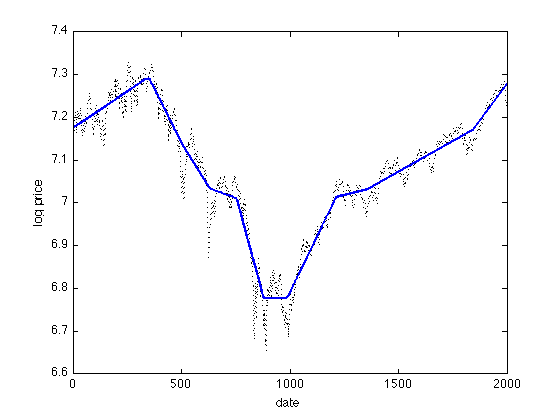

% Written for CVX by Kwangmoo Koh - 12/10/07 % % The problem of estimating underlying trends in time series data arises in % a variety of disciplines. The l1 trend filtering method produces trend % estimates x that are piecewise linear from the time series y. % % The l1 trend estimation problem can be formulated as % % minimize (1/2)*||y-x||^2+lambda*||Dx||_1, % % with variable x , and problem data y and lambda, with lambda >0. % D is the second difference matrix, with rows [0... -1 2 -1 ...0] % % CVX is not optimized for the l1 trend filtering problem. % For large problems, use l1_tf (www.stanford.edu/~boyd/l1_tf/). % load time series data y = csvread('snp500.txt'); % log price of snp500 n = length(y); % form second difference matrix e = ones(n,1); D = spdiags([e -2*e e], 0:2, n-2, n); % set regularization parameter lambda = 50; % solve l1 trend filtering problem cvx_begin variable x(n) minimize( 0.5*sum_square(y-x)+lambda*norm(D*x,1) ) cvx_end % plot estimated trend with original signal figure(1); plot(1:n,y,'k:','LineWidth',1.0); hold on; plot(1:n,x,'b-','LineWidth',2.0); hold off; xlabel('date'); ylabel('log price');
Calling Mosek 9.1.9: 5998 variables, 1999 equality constraints
------------------------------------------------------------
MOSEK Version 9.1.9 (Build date: 2019-11-21 11:32:15)
Copyright (c) MOSEK ApS, Denmark. WWW: mosek.com
Platform: MACOSX/64-X86
Problem
Name :
Objective sense : min
Type : CONIC (conic optimization problem)
Constraints : 1999
Cones : 1999
Scalar variables : 5998
Matrix variables : 0
Integer variables : 0
Optimizer started.
Presolve started.
Linear dependency checker started.
Linear dependency checker terminated.
Eliminator started.
Freed constraints in eliminator : 0
Eliminator terminated.
Eliminator - tries : 1 time : 0.00
Lin. dep. - tries : 1 time : 0.00
Lin. dep. - number : 0
Presolve terminated. Time: 0.00
Problem
Name :
Objective sense : min
Type : CONIC (conic optimization problem)
Constraints : 1999
Cones : 1999
Scalar variables : 5998
Matrix variables : 0
Integer variables : 0
Optimizer - threads : 8
Optimizer - solved problem : the primal
Optimizer - Constraints : 1999
Optimizer - Cones : 1999
Optimizer - Scalar variables : 5998 conic : 5998
Optimizer - Semi-definite variables: 0 scalarized : 0
Factor - setup time : 0.00 dense det. time : 0.00
Factor - ML order time : 0.00 GP order time : 0.00
Factor - nonzeros before factor : 7992 after factor : 7993
Factor - dense dim. : 2 flops : 6.39e+04
ITE PFEAS DFEAS GFEAS PRSTATUS POBJ DOBJ MU TIME
0 2.3e-02 4.9e+01 1.0e+05 0.00e+00 9.990050000e+04 0.000000000e+00 1.0e+00 0.01
1 2.7e-05 5.6e-02 7.8e+02 -9.60e-01 5.378312314e+03 -2.260254267e+01 1.2e-03 0.02
2 6.0e-07 1.3e-03 2.9e+00 8.95e-01 1.285302418e+02 -2.380654240e-01 2.6e-05 0.03
3 8.9e-08 1.9e-04 1.6e-01 9.97e-01 1.976496798e+01 6.736607045e-01 3.9e-06 0.03
4 3.9e-08 8.2e-05 4.3e-02 1.00e+00 9.272705213e+00 9.560293535e-01 1.7e-06 0.03
5 1.9e-08 4.1e-05 1.3e-02 1.00e+00 5.234715125e+00 1.120063862e+00 8.3e-07 0.04
6 8.1e-09 1.7e-05 3.0e-03 1.00e+00 2.995294554e+00 1.254542023e+00 3.5e-07 0.04
7 3.2e-09 6.8e-06 6.3e-04 1.00e+00 2.037621544e+00 1.347499165e+00 1.4e-07 0.04
8 1.3e-09 2.8e-06 1.4e-04 1.00e+00 1.664946352e+00 1.383078762e+00 5.7e-08 0.04
9 4.6e-10 9.8e-07 2.4e-05 1.00e+00 1.495757307e+00 1.396235461e+00 2.0e-08 0.05
10 1.4e-10 2.9e-07 3.2e-06 1.00e+00 1.430163148e+00 1.400436699e+00 6.0e-09 0.05
11 5.7e-11 1.2e-07 8.0e-07 1.00e+00 1.413534193e+00 1.401210314e+00 2.5e-09 0.05
12 1.6e-11 3.4e-08 1.1e-07 1.00e+00 1.405002838e+00 1.401545731e+00 6.9e-10 0.06
13 7.0e-12 1.5e-08 3.1e-08 1.00e+00 1.403101534e+00 1.401589316e+00 3.0e-10 0.06
14 1.8e-12 3.8e-09 3.9e-09 1.00e+00 1.402002257e+00 1.401612236e+00 7.8e-11 0.06
15 4.5e-13 2.2e-09 4.5e-10 1.00e+00 1.401713452e+00 1.401617081e+00 1.9e-11 0.07
16 3.5e-14 1.5e-08 1.0e-11 1.00e+00 1.401625686e+00 1.401618075e+00 1.5e-12 0.07
17 1.4e-13 2.3e-07 1.2e-15 1.00e+00 1.401618171e+00 1.401618153e+00 3.6e-15 0.07
Optimizer terminated. Time: 0.08
Interior-point solution summary
Problem status : PRIMAL_AND_DUAL_FEASIBLE
Solution status : OPTIMAL
Primal. obj: 1.4016181708e+00 nrm: 1e+00 Viol. con: 9e-12 var: 0e+00 cones: 0e+00
Dual. obj: 1.4016181528e+00 nrm: 5e+01 Viol. con: 0e+00 var: 1e-14 cones: 0e+00
Optimizer summary
Optimizer - time: 0.08
Interior-point - iterations : 17 time: 0.07
Basis identification - time: 0.00
Primal - iterations : 0 time: 0.00
Dual - iterations : 0 time: 0.00
Clean primal - iterations : 0 time: 0.00
Clean dual - iterations : 0 time: 0.00
Simplex - time: 0.00
Primal simplex - iterations : 0 time: 0.00
Dual simplex - iterations : 0 time: 0.00
Mixed integer - relaxations: 0 time: 0.00
------------------------------------------------------------
Status: Solved
Optimal value (cvx_optval): +1.40162
